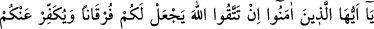
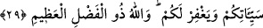
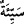
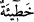

irfan mutluluğuna ulaşmaya ehil hale gelmiş kalbler ve ruhlar, size bahşettiği nimetleri
dünyanın ağı ve dünya ehlinin bir silahı haline getirerek onlar hususunda “Allah’a ve”
sünneti terkedip bid‘atları ayağa kaldırarak “Peygamber’e hâinlik etmeyin;” Sonra
dünya karşılığında dîni ve Mevlâ’yı sattığınızı “bile bile kendi emanetlerinize hâinlik
etmiş olursunuz.”
Emânetten maksad, Allah sevgisi; ona hâinlik etmek ise onu mahlukatın sevgisiyle
değişmektir.
Burada işaret ediliyor ki kalb erbabı ve seyr ü sülûk ashabı, taat ve yakınlığın
(kurbet) en üst mertebelerine ulaşıp sonra da dünyadan ve süslerinden bir şeye iltifat
eder, yapmacık davranışlarla Allah’a, bid’ate sarılıp yolundan gitmeyi terk ederek
Rasûlü’ne hainlik yaparsa bu hiyâneti ve onun âfetleri, muhabbetten ibaret olan emânete
de sirâyet eder. Dolayısıyla muhabbet kendilerinden tedrîcî olarak sökülüp alınır.
Yerini dünyaya meyil ve çocukları için hırsa kapılarak mal biriktirme sevgisi alır.
“Bilin ki,” kendileri için Allah’dan yüz çevirdiğiniz “mallarınız ve çocuklarınız”
Allah’ın muvâfıkı (Allah’ın emrine uyanı) münâfıktan ve sıddîkı zındıktan ayırmak
üzere sizi denemeye tâbi tuttuğu “birer imtihandır”
Dünyadan ve içindekilerden yüzçeviren kimse Mevlâ’yı talebinde sâdıktır “ve büyük
mükâfat Allah’ın katındadır” Allah katında olanı istediği için kendi yanında
bulunanları terk eden kimse, istediğini O’nun katında bulur.
Diğer bir mânâya göre Allah katındaki büyük mükâfâttan maksad, O’na vâsıl olmaktır.
Çünkü hakîkî mânâda büyük olan (el-Azîm), Allah’tır. O halde o kimse Allah Teâlâ’yı
bulur. (et-Te’vîlâtü’n-Necmiyye’de böyle geçmektedir.)
29. Ey îman edenler! Eğer Allah’tan korkarsanız O, size iyi ile kötüyü
ayırdedecek bir anlayış verir, günahlarınızı örter ve sizi bağışlar. Çünkü Allah
büyük lütuf sahibidir.
“Ey îman edenler! Eğer” yaptığınız ve terk ettiğiniz her hususta “Allah’tan
korkarsanız” takvâ üzere olursanız bu sebeple “O, size iyi ile kötüyü ayırdedecek bir
anlayış verir” kalblerinizde hak ile bâtılı ayırdetmenize yarayacak bir hidâyet nuru
veya müminleri yüceltip kâfirleri alçaltarak haklı ile haksızı ayırdedecek bir zafer verir.
Nitekim Allah Teâlâ “…ayrılma gününde, o iki topluluğun karşılaştığı (Bedir)
gün(ün)de…” (el-Enfâl, 8/41) buyurarak müminlerin yücelip kâfirlerin perişan olduğu
günü kasdetmiştir.
“Günahlarınızı örter.” İkisi de günah anlamına gelen “
” ile “
” arasında fark
vardır. Seyyie, bizzat kastedilerek işlenen günahlara, hatîe ise “hata” kelimesinden